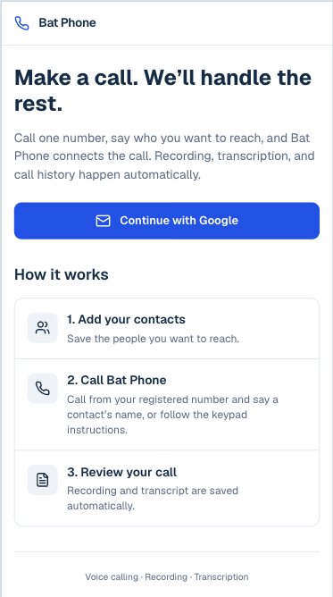
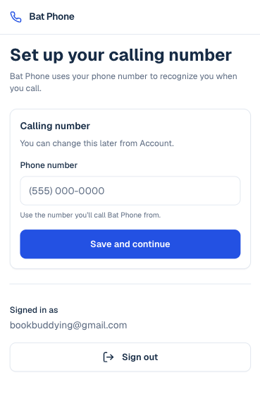
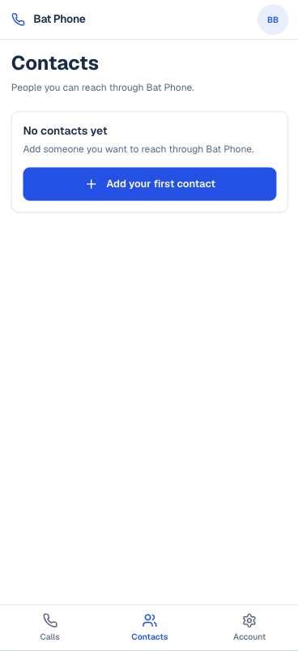
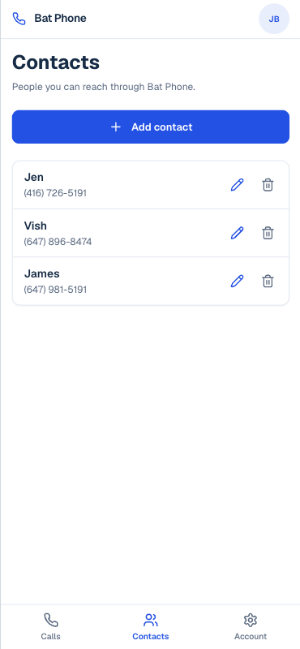
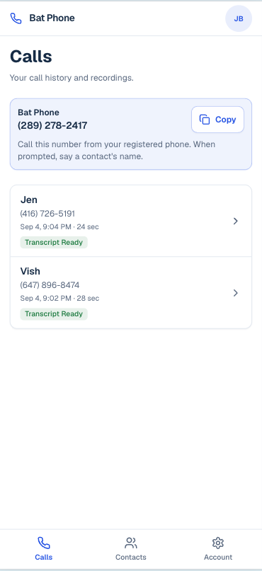
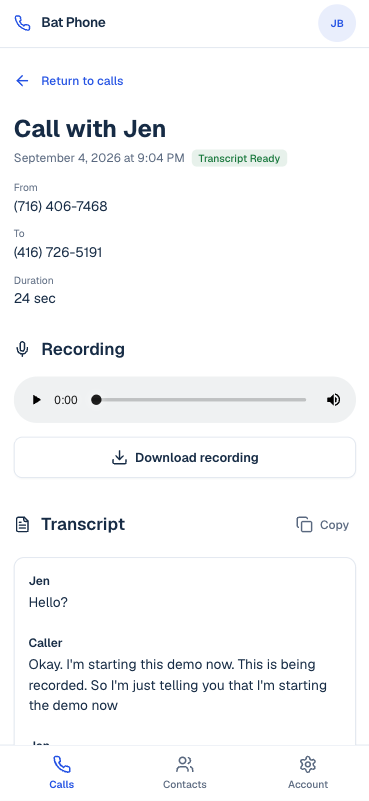
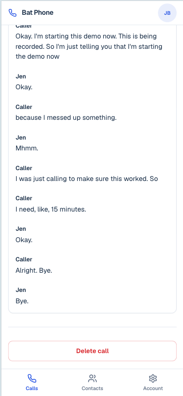

Internal · Employee quick start
Call saved contacts through one shared number. Recordings, transcripts, and history are saved automatically.
genius-bat-phone.vercel.app




Call this number from your registered phone. When prompted, say a contact’s name, or follow the keypad instructions.


Transcripts may take a short time after the call ends.
